ゼロ年代の変性意識文化について
そのようなわけで...
レイヴのフライヤーについて前回は、1998年から1999年にかけて参加したレイヴのものを紹介した。そこには、コンピュータグラフィックとオーガニックなイメージ、サイバーな感覚とシャーマニズム的な意匠が混在していた。私はその空間に、テクノロジーによって人間の存在や意識が変わっていくことへの、時代的な「夢」を感じていた。
では、ミレニアムという象徴的な節目を越えたあと、その期待はどこへ向かったのだろうか。
ここでは、2000年から2003年にかけて手元に残っているフライヤーを見ていく。2000年の段階では、まだ90年代末の雰囲気が続いている。野外の自然、太陽や月、曼荼羅、宇宙、精霊を思わせる図像。レイヴは単なる音楽イベントではなく、自然や共同性への回帰を想像させる場として表現されていた。
しかし、2001年を境に、少しずつ様相が変わっていく。
その変化を強く感じたのが、2001年1月20日に赤坂BLITZで開催された、Juno Reactorの来日公演「SHANGO TOUR 2001」だった。Juno Reactorは、ゴアやサイケデリック・トランスを代表するユニットであり、90年代には、岐阜の山奥にあるキャンプ場（前回フライヤー参照）などで、和太鼓や自然の音響と結びついた空間の中で聴いていた音楽だった。
そのJuno Reactorが、赤坂という都市の中心部にある大規模な会場で演奏する。しかも公演の主催には、地上波のキー局であるTBS（赤坂BLITZの運営会社でもある）が関わっていた。90年代のトランス・シーンを現場から支えてきたEquinoxのようなオーガナイザーと、大手メディアや企業が結びつき、サイケデリック・トランスがメジャーなエンターテインメントとして提示されていたのである。
これは、むしろ、トランスミュージックというものが、より多くの人へ届くための回路を得たとも言える。Juno Reactorはその後、映画『マトリックス リローデッド』のサウンドトラックにも参加している。サイケデリック・トランスは映画や大規模な興行を通じて、世界的なポップカルチャーへ流れ込んでいった。
一方で、フライヤーのデザインからは、別の変化も見えてくる。
90年代末のフライヤーには、手描きの文字やコラージュ、曼荼羅、動物、精霊、宇宙的な図像が多く、情報そのものもどこか不完全だった。会場や連絡先を知るためには、特定の店に行ってフライヤーを手に入れたり、知人から情報を聞いたりする必要があった。情報は、まだ人間関係や場所に埋め込まれていた。
2001年以降になると、CGによって描かれた未来的で洗練されたイメージが増え、文字の配置も整然としていく。裏面にはウェブサイトのURLが記載され、イベント情報は、店や人づてのネットワークからインターネットへ移行していった。
これは単なるデザインの変化ではない。レイヴを取り巻く情報環境そのものが変わったのである。かつては、誰かから手渡されることでしか参加できなかった場が、ウェブサイトを通じて検索され、告知され、管理されるようになった。
さらに、フライヤーにはハイネケン、Pioneer、スペースシャワーTV、コールマンなどの企業ロゴが並び始める。企業との協賛はイベントを安定させ、規模を拡大するための重要な手段だっただろう。しかし同時に、レイヴは企業のマーケティングやブランドイメージと結びつくことで、別の言語へと翻訳されていった。
その変化は、「NO DRUG AND VIOLENCE」という警告文にも表れている。この表示の背景には、レイヴにおける薬物使用や暴力の問題が、次第にマスメディアで取り上げられるようになったこともあったのだろう。90年代のレイヴでは、音楽、踊り、自然、サイケデリックな意識変容への関心が、必ずしも明確に切り分けられないまま同じ空間に存在していた。だが2000年代に入り、イベントが大規模化し、企業やメディアとも結びつくようになると、主催者には安全管理や社会的責任を明示することが求められるようになった。
ここには、ひとつの逆説がある。
レイヴには、既存の社会とは異なる共同性や意識のあり方を探る場となる可能性が秘められていた。しかし、その夢が広く共有されるためには、企業、メディア、インターネット、会場の規則といった既存の社会的な装置を通過しなければならなかった。夢は拡大したが、その過程で、制度や市場が理解できる形へと整えられていったのである。
これは、前回触れたラシュコフの議論ともつながっている。テクノロジーやネットワークは、人間の自由や共同性を拡大する可能性を持っている。しかし、その回路が企業や市場によって所有されると、解放のための仕組みは、管理や消費の仕組みにもなりうる。
2000年のフライヤーには、まだ90年代末の「手作り感」と、自然や宇宙への想像力が残っている。2001年以降のフライヤーには、そこへ洗練されたCG、ウェブサイト、企業協賛、安全管理の言葉が加わっていく。
では、私自身はその変化の中で、何を見ていたのだろうか。
90年代末、私はレインボー2000やその他のレイヴに、テクノロジーと人間存在の変容が交差する場所を感じていた。2000年代に入ると、その夢は消えたのではなく、別の形へ移行していった。音楽、映像、インターネット、企業、自然、意識変容。これらは分離したのではなく、より複雑な仕方で結びつき始めた。
この先は、フライヤーの変化だけではなく、実際のレイヴの現場で何が起きていたのかを追ってみたい。そこでは、シャーマニズムやニューエイジ、サイケデリック、神秘主義といった言葉が、どのように使われ、体験され、また商品化されていったのだろうか。
「なぜ、私はそこにいたのか」という問いは、まだ終わっていない。むしろ、2000年代のレイヴや変性意識文化をたどることで、その問いはさらに別の形を取り始めている。
2000年
1月22日 密林INSPIRATION FROM MOTHER NATURE 浜ベイホール
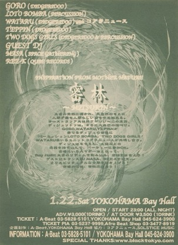
2月10日 Return to the Source 2000 ZeppTokyo
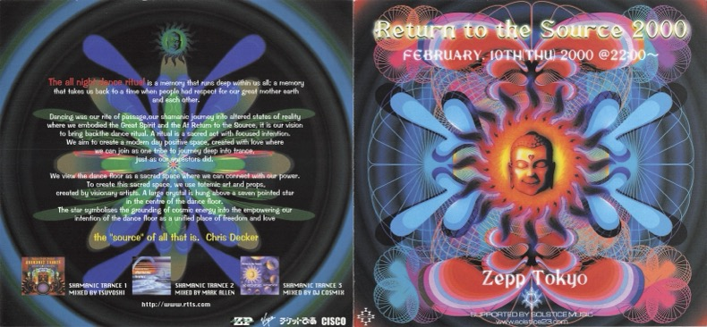
2月26日 KALEIDOSCOPICS 横浜ベイホール
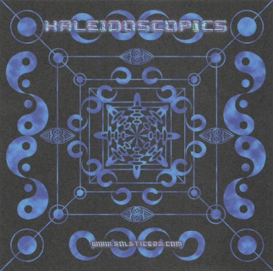
2月26日 VISION QUEST (X-DREAM) ZepTokyo
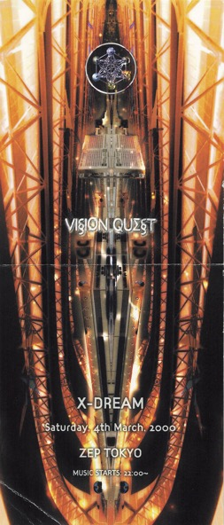
6月21日 SOLSTICE MUSIC FESTIVAL 表富士グリーンキャンプ場
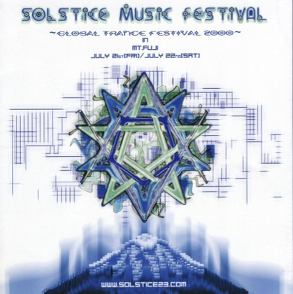
8月1日 いのちの祭り 2000 サンアルピナ鹿島槍スキー場・黒沢高原T
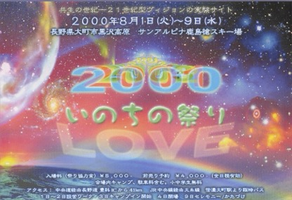
9月15日 THE GATHERING 2000 (Vision Quest) こだまの森キャンプ場
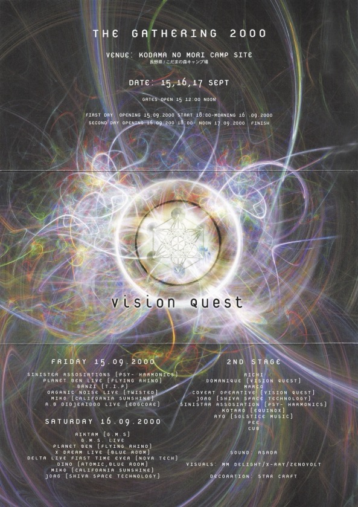
10月14日 EARTH DANCE 2000 道志の森キャンプ場
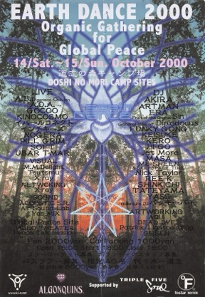
2001年
1月20日 JUNO REACTOR SHANGO TOUR 2001 赤坂BLITZ
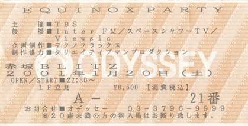
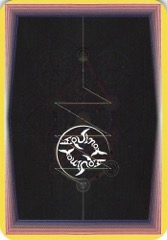
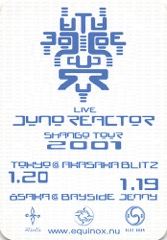
4月21日 OFF THE GROUND 後楽園 ジオポリス
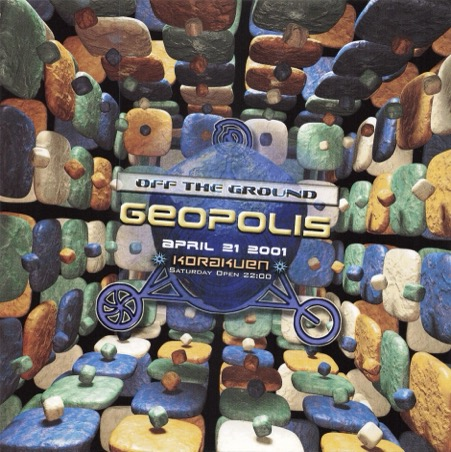
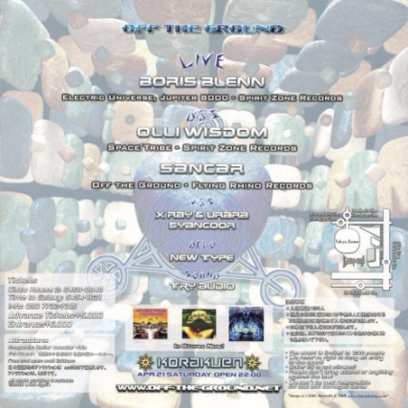
9月22日 THE GATHERING 2001 (Vision Quest) こだまの森キャンプ場
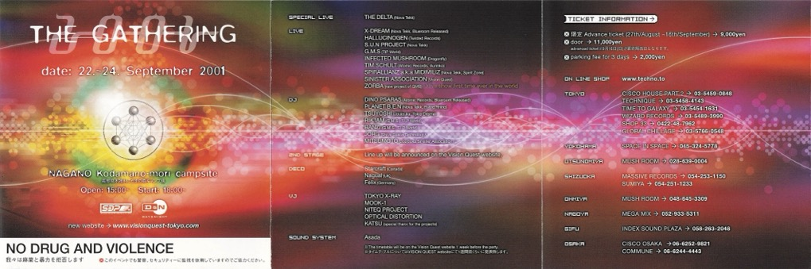
9月29日 SUB SCIENCE - 3D Vision new compilation album release party (arcadia) TSK・CCCビルCORE.
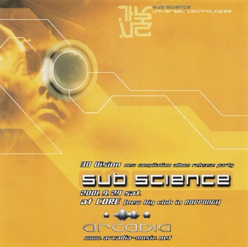
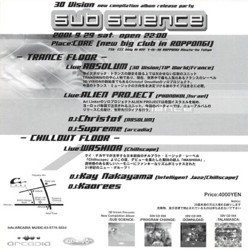
2002年
1月19日 THE GATHERING 2002(Vision Quest) 日和田高原ロッジキャンプ場
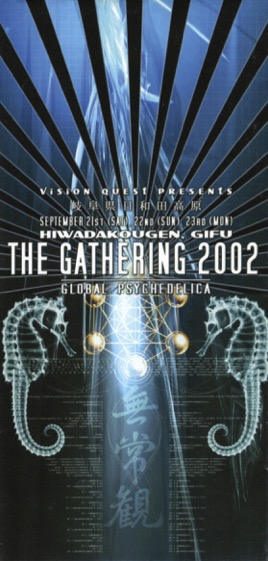
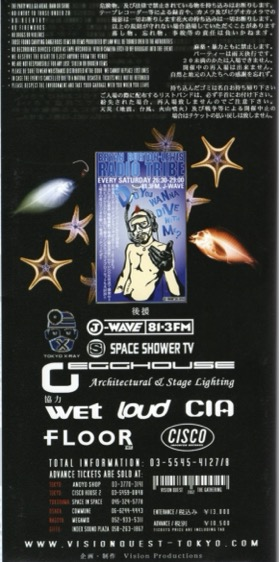
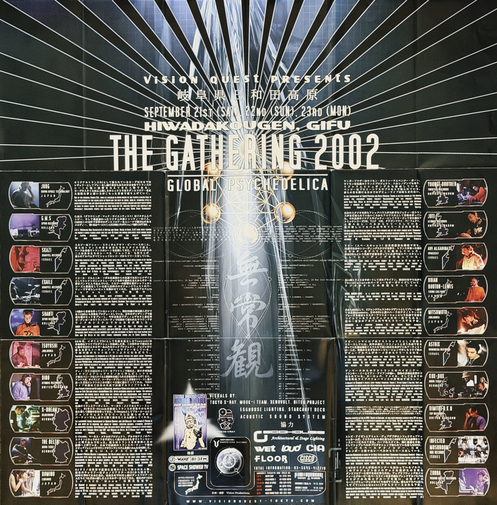
2003年
8月22日 The Rolling Thunder The Collective Art ConsciousFestival(anoyo) 新潟県佐渡島 二ツ亀
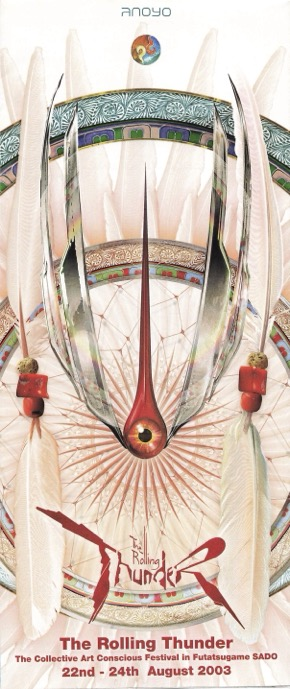
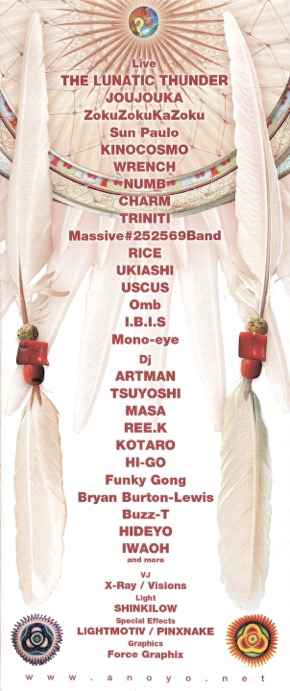
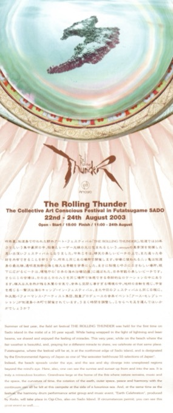
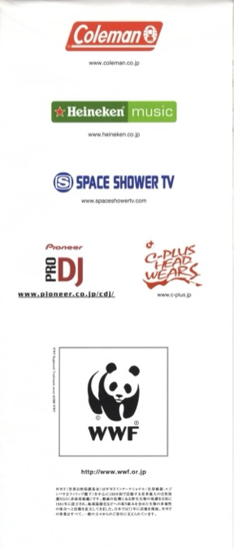
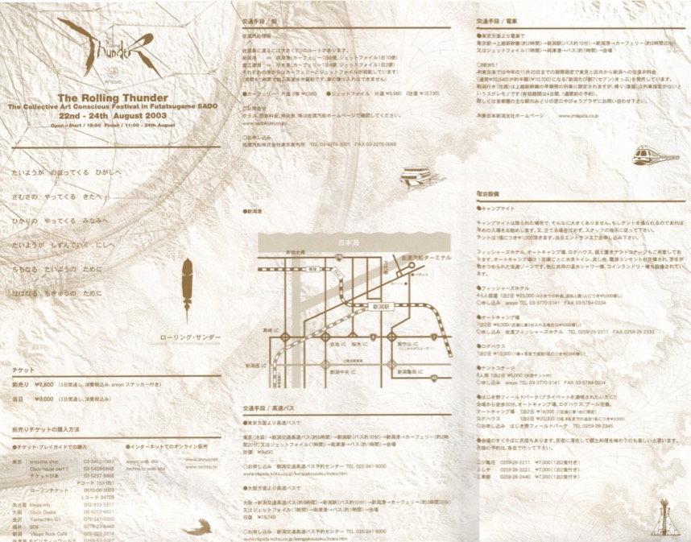
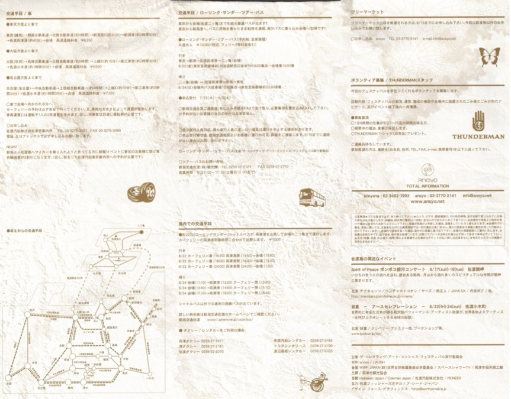
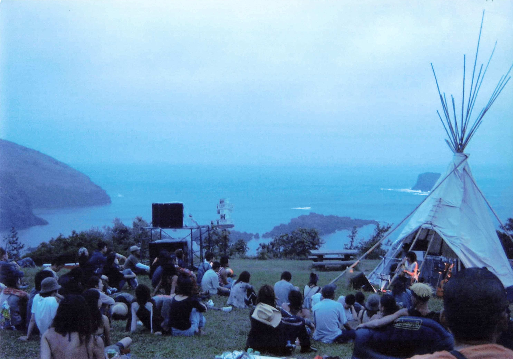